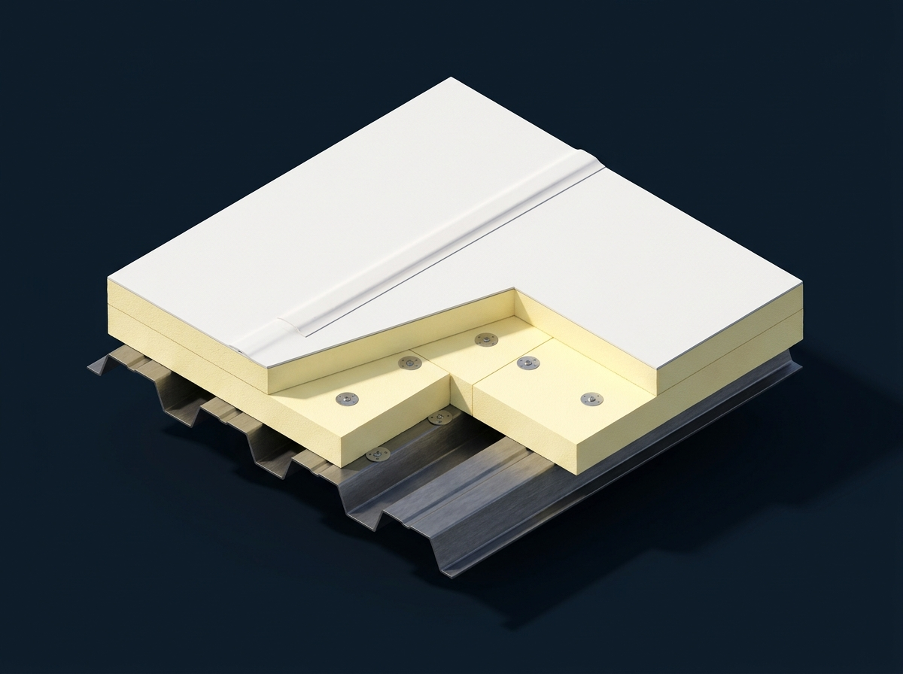
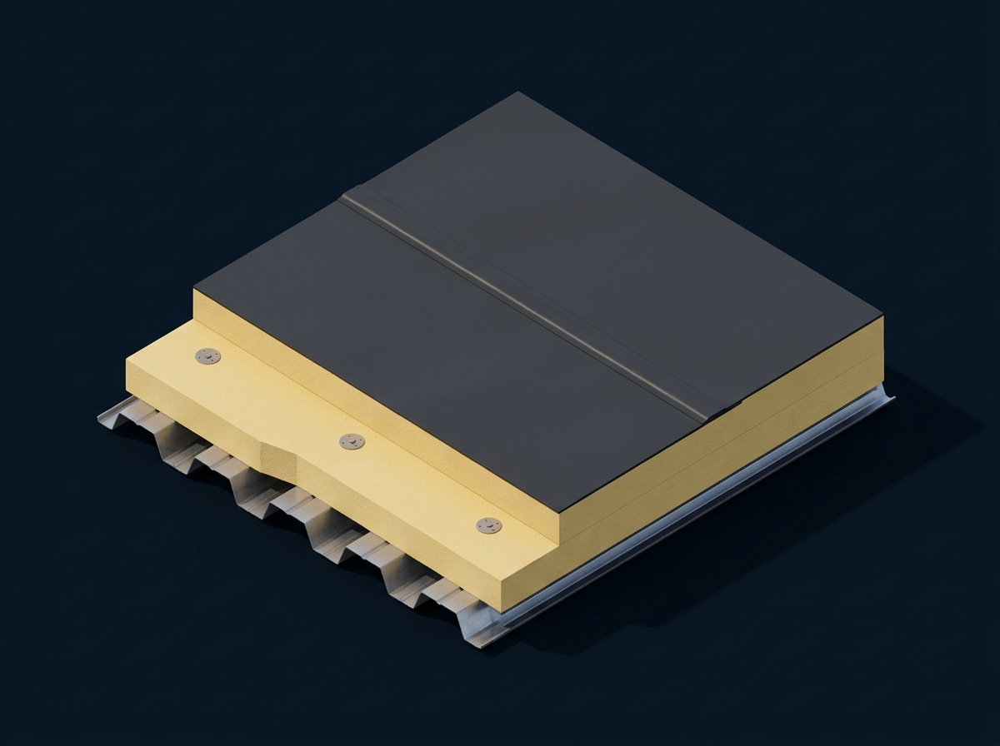
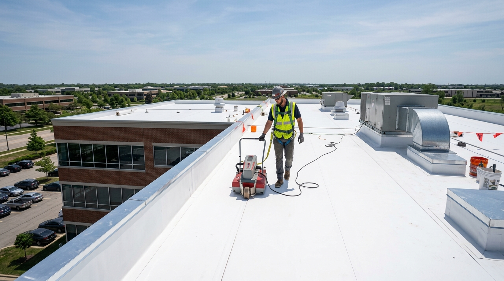
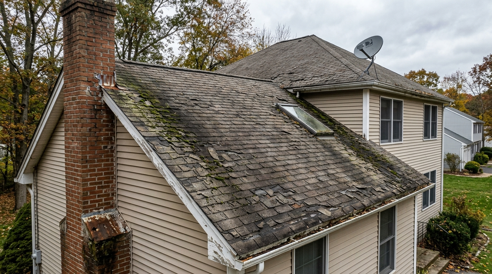
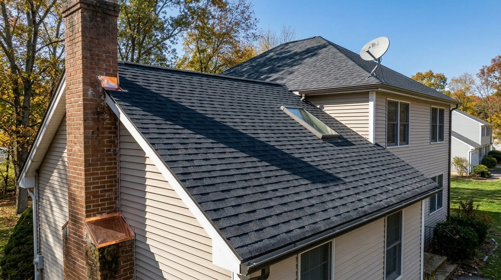
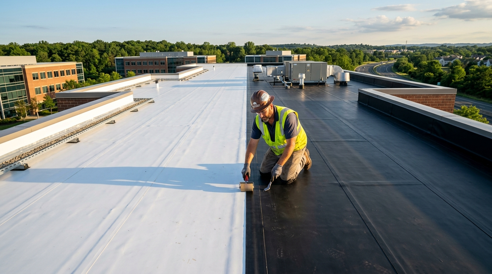
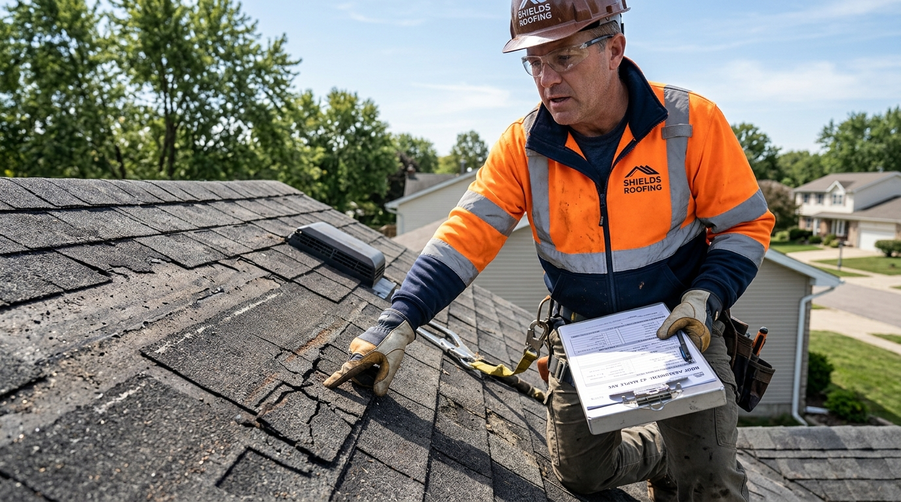
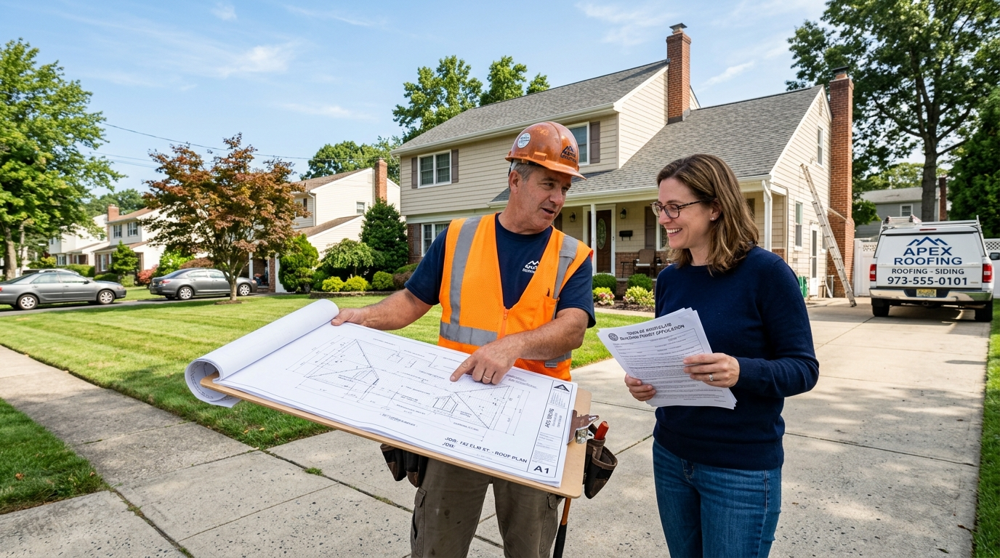

TPO & EPDM Roofing Systems in Bridgewater, NJ
Engineered single-ply TPO and EPDM membrane roofing for commercial facilities, retail plazas, industrial complexes, and residential low-slope sunrooms throughout Somerset County. Factory-certified installations of hot-air heat-welded thermoplastic polyolefin and vulcanized synthetic rubber systems with tapered polyiso drainage crickets. Guaranteed leak-free performance and manufacturer warranties up to 30 years.

Persistent Seam Delamination, Ponding Pools, or Active Membrane Leaks?
Our certified single-ply technicians provide electronic vector testing, infrared thermal moisture scans, and emergency heat-welded repairs across Somerset County.
Next-Generation TPO & EPDM Single-Ply Membrane Systems
When dealing with flat decks and low slopes under 2:12 pitch, standard multi-layer shingles fail due to capillary water draw. Modern commercial architecture and residential extensions demand continuous, monolithic membranes engineered to endure ponding water, chemical exposure, and intense thermal expansion.
At Bridgewater Roofer, we install the two industry benchmarks of low-slope waterproofing: Thermoplastic Polyolefin (TPO) and Ethylene Propylene Diene Terpolymer (EPDM). Our robotic hot-air welding equipment fuses TPO lap seams at over 1,000°F, creating a chemical molecular weld stronger than the membrane itself. For heavy freeze-thaw resilience, our heavy-duty EPDM rubber systems utilize factory-cured seam tapes with synthetic rubber primers that stretch seamlessly through sub-zero New Jersey winters.
We integrate continuous high-density polyisocyanurate (Polyiso) insulation meeting New Jersey Energy Conservation Code R-30 requirements. Custom tapered cricket assemblies funnel stormwater directly into internal clamping sumps and heavy-gauge perimeter scuppers, eliminating standing water and delivering up to 30 years of worry-free defense.

8 Single-Ply Problems We Diagnose & Eliminate
Single-ply membrane roofs face severe environmental stresses. Here are the common failures our engineered systems permanently resolve:
Separated Lap Seams & Fishmouths
Aging contact cement or hand-welded seams pull apart under thermal contraction, allowing rain to siphon straight into sub-layers.
Persistent Standing Ponding Water
Depressions in roof decking collect stagnant water that deteriorates scrim adhesives and strains structural load capacity.
UV Degradation & Surface Cracking
Unreinforced or thin 45-mil membranes degrade under intense summer sun, forming micro-cracks that allow moisture migration.
Mechanical Punctures & Foot Traffic Tears
HVAC service technicians, dropped tools, and windborne debris puncture brittle membranes, creating concealed penetration holes.
Waterlogged Polyiso Insulation Boards
Subsurface leaks saturate rigid foam insulation, destroying thermal R-values and causing interior energy heating/cooling bills to spike.
Cracked HVAC Curb & Vent Pipe Flashings
Split pitch pockets, cracked neoprene boots, and failing rooftop unit curbs leak water along internal conduit conduits into living spaces.
Loose Parapet Wall Termination Bars
Rusted mechanical anchors and dry polyurethane caulk allow wind-driven rain to bypass perimeter flashing and soak interior drywall.
Wind Uplift & Perimeter Membrane Tenting
Inadequate perimeter edge metal fastening allows high nor'easter gusts to billow the membrane, risking catastrophic blow-off.
Anatomy of a High-Performance Single-Ply Assembly
Explore the multi-layer engineered system behind our leak-free TPO and EPDM installations in Somerset County:
Hot-Air Welded TPO & Vulcanized EPDM Membranes
White reflective TPO and vulcanized synthetic EPDM provide 100% monolithic waterproof barriers for low-slope architecture. Heat-welded seams create molecular bonds far stronger than the membrane itself, ensuring permanent defense against standing ponding water and harsh New Jersey freeze-thaw cycles.
8 Warning Signs Your Single-Ply Roof Needs Service
Identifying membrane weaknesses early prevents catastrophic interior moisture damage, mold growth, and rotted structural decking:
Separating Lap Seams & Open Voids
Curling or open lap seams permit driving rain to siphon directly beneath the waterproof membrane layer.
Water Ponding Beyond 48 Hours
Persistent standing water indicates inadequate deck slope, saturated polyiso insulation, or clogged internal drain clamping rings.
Large Vapor Blisters & Bubbles
Gas bubbles forming under the membrane indicate trapped moisture vaporizing during hot summer afternoons.
Spongy, Sinking Sensation Underfoot
Walking the roof reveals soft, flexing depressions where hidden leaks have deteriorated underlying insulation boards.
Ceiling Stains Beneath Sunrooms or Additions
Brown water stains appearing on ceilings beneath low-slope residential extensions signal failing flashings or seams.
Loose or Bowing Parapet Termination Bars
Gaps between perimeter termination metal and masonry walls allow driving rain behind the membrane, flooding wall framing.
Cracked Vent Pipe Boots & Pitch Pockets
Dried-out neoprene penetration boots or cracked pourable sealer around HVAC conduits leak water into electrical paths.
Spike in Summer Cooling Electric Bills
Saturated flat roof insulation loses thermal resistance, causing HVAC cooling units to run continuously.
Single-Ply Roofing Engineered for Bridgewater Properties
From the commercial corridors along Route 22, Route 202/206, and Commons Way to residential sunroom additions in Green Knoll, Country Club Road, and Bradley Gardens, Bridgewater properties rely extensively on single-ply roofing.
Central New Jersey’s climate creates severe thermal demands. Mid-winter nor'easters dump heavy snowpacks that linger on low-slope decks, while summer heat waves drive surface temperatures above 150°F on dark roofs. Our reflective white TPO systems bounce back 87% of incoming solar heat, drastically cutting commercial utility bills. For heavily shaded properties or cold-season flexibility, our 60-mil EPDM rubber remains flexible down to -49°F, absorbing ambient thermal energy to accelerate snowmelt.
Bridgewater Roofer works directly with Bridgewater Township Code Enforcement (located at 505 Route 202/206), pulling all building permits and ensuring 100% compliance with New Jersey Uniform Construction Code (UCC) insulation standards.
Our 8-Step TPO & EPDM Installation Protocol
Every single-ply installation adheres to strict manufacturer specifications to guarantee zero ponding water and qualify for full NDL warranties:
Core Sample & Moisture Analysis
We extract physical core samples and conduct electronic moisture scans to verify deck integrity and insulation condition.
Tear-Off & Substrate Preparation
We strip failed roof membranes down to bare steel or wood decking, replacing compromised sheets and installing solid nailers.
High-Performance Vapor Barrier
We install a continuous self-adhered air and vapor barrier directly onto structural decking to prevent building humidity condensation.
Tapered Polyiso Insulation (R-30+)
We lay staggered layers of high-density polyisocyanurate with custom tapered crickets engineered to eliminate standing water.
Membrane Layout & Attachment
Commercial-grade 60-mil or 80-mil TPO/EPDM is secured using either low-rise polyurethane foam adhesive or RhinoBond induction plates.
Robotic Heat Welding / Seam Splice
Automated Leister robots fuse TPO lap seams with 1,000°F air; EPDM systems receive factory-cured primer and 6-inch splice tape.
Perimeter Flashing & Drip Edge Coping
We install prefabricated pipe boots, seal drain clamping rings, and hem heavy-gauge commercial aluminum termination coping bars.
Vector Seam Probing & Warranty Issuance
Every linear inch of welded seam is physically probed with an inspector tool, followed by final township inspection and warranty delivery.
Comprehensive Single-Ply Membrane Services
Tailored engineering for commercial buildings, industrial plazas, and residential low-slope sunrooms:
Commercial TPO Membrane Systems
Energy Star white thermoplastic polyolefin offering industry-leading solar reflectivity, ozone resistance, and chemical defense.
TPO Details →EPDM Synthetic Rubber Roofing
Heavy-duty 60-mil and 90-mil vulcanized rubber membranes with over 50 years of proven durability in cold Northeastern climates.
EPDM Systems →Residential Sunroom & Porch Conversions
Replacing leaking asphalt shingles on residential low-slope additions with sleek, watertight white single-ply membranes.
Sunroom Solutions →Tapered Insulation & Drainage Retrofits
Custom slope-to-drain polyiso cricket assemblies engineered to eliminate sitting water puddles on existing flat roofs.
Tapered Insulation →Turnkey Commercial Re-Roofing
Full tear-offs and overlays for retail centers, medical facilities, and warehouses with up to 30-year manufacturer NDL warranties.
Commercial Solutions →Fluid-Applied Silicone Roof Restoration
Seamless monolithic silicone coatings applied over aging, dry flat membranes, extending roof lifespan by 15–20 years.
Silicone Coatings →Emergency Membrane Seam Repair
Rapid emergency patch units, electronic vector leak tracking, and permanent heat-welded patches for active membrane breaches.
Leak Repair →Parapet Coping & Termination Bars
Custom-fabricated sheet metal coping caps, reglet counter-flashing, and industrial termination bars for watertight wall transitions.
Flashing Details →Choosing Between TPO, EPDM & Fluid Restoration
An engineering breakdown to help you select the optimal single-ply roofing technology for your building:
Heat-Welded White TPO
- ✔Hot-air welded seams 400% stronger than glued seams.
- ✔Reflective white surface cuts summer cooling bills by 20%+.
- ✔Exceptional resistance to chemical runoff and ponding water.
- ✔Lifespan: 22 to 30 years with manufacturer NDL warranties.
Vulcanized Synthetic Rubber
- ✔Over 50 years of proven durability in cold Northeastern climates.
- ✔Maintains flexibility down to -49°F for freeze-thaw defense.
- ✔Dark surface absorbs solar heat to melt winter snow faster.
- ✔Lifespan: 25 to 35 years with exceptional puncture resistance.
Fluid-Applied Elastomeric Coating
- ✔Restores sound existing membranes at 40-60% savings.
- ✔Creates a 100% seamless monolithic barrier over seams.
- ✔Zero tear-off waste and zero tenant operational interruption.
- ✔Extends roof life by 15-20 years; fully tax deductible year one.
8 Factors That Shape Single-Ply Investment
Single-ply membrane systems involve specialized thermal insulation and edge details. Key technical pricing drivers include:
Membrane Mil Thickness (60 vs 80-mil)
Choosing heavy-duty 80-mil TPO or 90-mil EPDM increases puncture resistance and qualifies for 25 to 30-year NDL warranties.
Tapered Polyiso Crickets (Slope Design)
Designing custom tapered slope-to-drain insulation crickets to eliminate ponding pools requires engineering and extra board volume.
Existing Roof Layers (NJ 2-Layer Code)
Under N.J.A.C. 5:23, roofs with two existing layers cannot receive a third overlay. A complete tear-off down to bare decking is legally required.
Attachment Method (Adhered vs Mechanical)
Fully adhered systems use commercial bonding adhesives for smooth, maximum wind resistance; mechanical systems use plates.
Rooftop Penetration & HVAC Curb Density
Roofs with multiple air handlers, vents, and skylights require custom preformed membrane boots and hand-welded detail work.
Parapet Wall Height & Coping Metal
High perimeter masonry walls requiring full vertical membrane turn-ups and custom commercial coping caps influence material scope.
Internal Drain & Scupper Upgrades
Installing new cast-iron clamping ring drains, retrofitting sump bowls, or cutting larger through-wall scuppers for drainage.
Bridgewater UCC Permitting Fees
Municipal permit filing fees with the Bridgewater Township Code Enforcement office based on verified project scope and valuation.
Bridgewater TPO & EPDM Permitting & Code Compliance
Under the New Jersey Uniform Construction Code (UCC), complete commercial and residential low-slope roof replacements require building permits issued by Bridgewater Township Code Enforcement (located at 505 Route 202/206).
Flat roof replacements trigger New Jersey energy conservation code mandates requiring continuous R-30 insulation packages. Bridgewater Roofer prepares all structural engineering drawings, calculates thermal R-values, pays municipal fees, and coordinates official township inspections upon project completion.
Recent Single-Ply Installations in Somerset County
Explore authentic low-slope transformations executed with precision engineering, on schedule, and within budget:
Sunroom Shingle-to-TPO Low-Slope Conversion
A previous contractor improperly installed asphalt shingles on a 1.5:12 pitch sunroom addition, causing chronic leaks. We tore off the shingles, replaced 4 rotted plywood sheets, and installed heat-welded white 60-mil TPO with custom headwall flashing.

18,000 Sq. Ft. Flat Re-Roof with Zero Ponding
Removed aging ballasted EPDM with chronic 3-inch ponding pools. Engineered custom tapered polyiso crickets and installed robotic heat-welded Carlisle TPO with new internal drain sumps.
Interactive Before & After Flat Roof Transformation
Drag the interactive slider handle to inspect our single-ply installation craftsmanship.

Before (Deteriorated Ponding Roof)
After (Reflective Monolithic TPO)Why Somerset County Trusts Us for TPO & EPDM
Certified master applicators, automated robotic seam welding, and comprehensive manufacturer warranties:
Certified Master Applicators
Authorized applicators for Carlisle SynTec, GAF EverGuard, and Elevate/Firestone, delivering up to 30-year NDL warranties.
Robotic Hot-Air Seam Welding
Automated Leister hot-air robots fuse TPO seams at 1,000°F, creating a chemical molecular bond 400% stronger than adhesives.
Tapered Slope-to-Drain Design
We eliminate ponding puddles by engineering custom polyiso insulation crickets that actively funnel rainwater toward drains.
Bridgewater UCC Permit Experts
Turnkey management of Somerset County and Bridgewater municipal building codes, engineering calculations, and inspections.
Energy Star Reflective White TPO
Cool roof technology reflects 87% of solar heat, significantly reducing summer attic temperatures and cooling electricity bills.
Zero Subcontractors
Every single-ply project is installed by our own in-house factory-certified technicians who specialize exclusively in low-slope roofing.
What Property Owners Say About Our Single-Ply Roofing
Read authentic feedback from Somerset County property owners who chose our TPO & EPDM systems:
TPO & EPDM Across Bridgewater & Somerset County
Our single-ply membrane crews provide installation, repairs, and retrofits across Bridgewater and neighboring Somerset County communities:
Bridgewater, NJ
Commercial facilities, flat sunrooms & single-ply TPO/EPDM membrane installations
Somerville, NJ
Downtown commercial flat roofs, retail decks & heat-welded TPO retrofits
Raritan, NJ
Commercial warehouse flat roofs & residential garage EPDM rubber installations
Martinsville, NJ
Contemporary flat roof sections, walk-out decks & ponding mitigation crickets
Bound Brook, NJ
River valley weatherization, parapet wall coping & TPO installations
Basking Ridge, NJ
Corporate flat plazas, estate sunrooms & durable white TPO reflective systems
Warren, NJ
Custom luxury estate flat decks, copper perimeter tie-ins & single-ply assemblies
Bedminster, NJ
Equestrian barns, estate porch low-slope roofs & black EPDM rubber membranes
Branchburg, NJ
Industrial park re-roofs, commercial flat decks & energy-efficient white TPO
Hillsborough, NJ
Commercial retail plazas, school flat roofs & residential low-slope additions
Manville, NJ
Low-slope porch additions, detached garages & vulcanized EPDM replacements
TPO & EPDM Roofing FAQs
Straightforward answers to common questions about single-ply membrane roofing in Bridgewater:
What is the difference between TPO and EPDM roofing?
TPO (Thermoplastic Polyolefin) is a white single-ply membrane with hot-air heat-welded seams that create a permanent chemical bond. Its reflective white surface cuts summer cooling bills by 20%+. EPDM (Ethylene Propylene Diene Terpolymer) is a synthetic rubber membrane with factory-cured seam tape that provides exceptional flexibility down to -49°F and absorbs winter solar heat to melt snow faster.
How long do TPO and EPDM roofs last in New Jersey?
A certified 60-mil or 80-mil TPO roof typically lasts 22 to 30 years in Central New Jersey. High-quality EPDM rubber roofs regularly achieve 25 to 35+ years of service life when seams and flashings receive periodic inspection.
Which membrane handles ponding water better?
Both TPO and EPDM are fully waterproof membranes capable of handling temporary ponding water. However, TPO's robotic heat-welded seams are monolithic and will not soften under water exposure, making it slightly superior where mild ponding occurs. We also install tapered polyiso crickets to eliminate ponding pools altogether.
Can TPO or EPDM be installed on residential home additions?
Yes. In fact, single-ply TPO or EPDM is mandatory for residential sunrooms, porch extensions, and additions with pitches flatter than 2:12. Installing standard shingles on low slopes leads to water siphoning and wood rot; single-ply provides a permanent monolithic seal.
How much does a TPO or EPDM roof replacement cost?
Single-ply roof investments typically range from $7.50 to $13.50 per square foot depending on membrane mil thickness (60 vs 80-mil), insulation R-value requirements (R-30 polyiso), attachment method (mechanically fastened vs fully adhered), and penetration density. Call (908) 465-9944 for an itemized on-site evaluation.
Are TPO and EPDM roofs energy efficient?
Yes. White TPO is an EPA Energy Star and CRRC-certified Cool Roof that reflects up to 87% of incoming solar heat, reducing peak HVAC electrical draw by 15-25%. EPDM absorbs winter heat, making it advantageous in unshaded buildings with heavy winter heating demands.
Does flat roof replacement require a permit in Bridgewater Township?
Yes. Full flat roof replacements and overlays require building permits issued by Bridgewater Township Code Enforcement (505 Route 202/206). We manage all permit filings, engineering calculations, and coordinate final township inspections directly.
What warranties are available for TPO and EPDM installations?
We provide manufacturer No Dollar Limit (NDL) material and labor warranties ranging from 20 to 30 years from premier manufacturers like Carlisle SynTec, GAF, and Elevate, in addition to our own comprehensive workmanship guarantee.
Helpful Single-Ply Roofing Resources
Learn more about low-slope engineering, membrane comparisons, and permit rules:

TPO vs. EPDM: The Comprehensive Guide
Detailed technical comparison of seam welding, UV reflectivity, lifespan, and lifecycle ROI in NJ.
Read Comparison Guide →
Flat Roof Repair vs. Replacement
Understand the 25% moisture rule, Section 179 tax deductions, and how to evaluate coatings vs tear-offs.
Read Decision Guide →
Navigating Bridgewater Roofing Permits & NJ UCC
A property owner's guide to local building codes, structural wind calculations, and permit inspections.
Read Permit Guide →Have a TPO or EPDM Leak or Replacement Project?
Speak directly with our single-ply membrane project managers. We provide complimentary commercial and residential roof audits, infrared thermal moisture scans, and detailed itemized proposals with zero pressure.